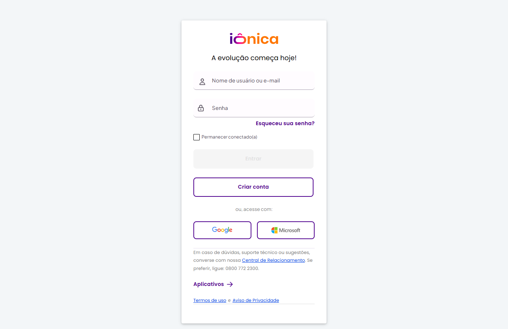
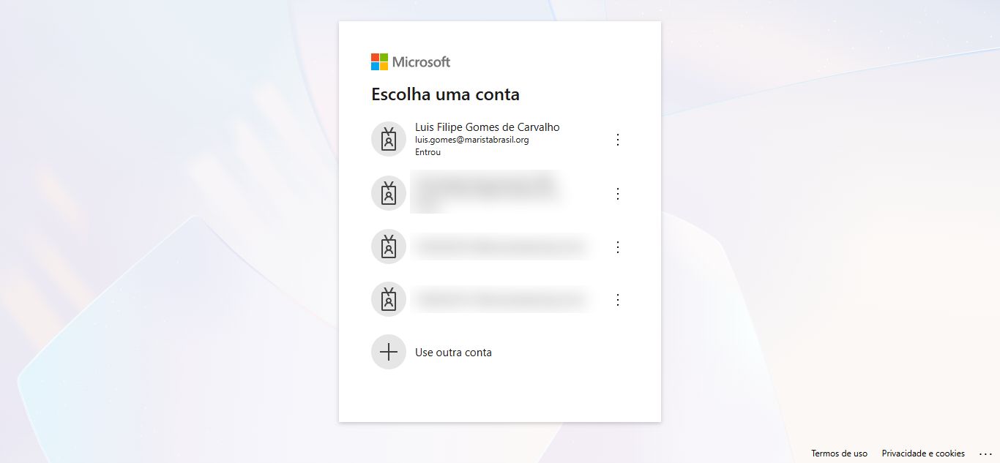
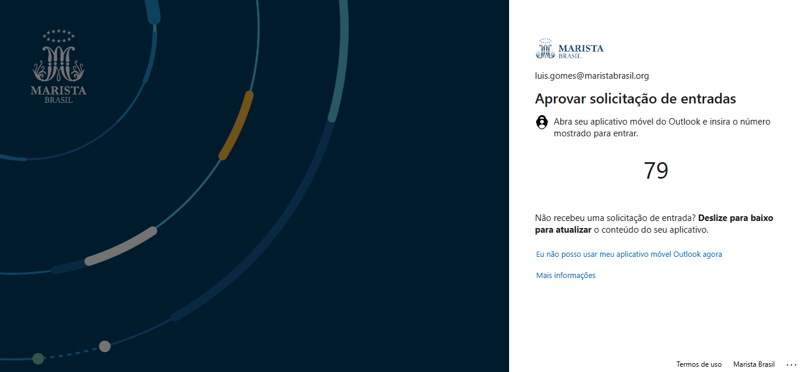
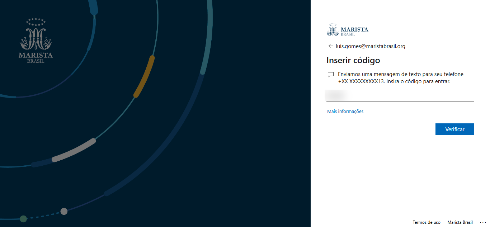
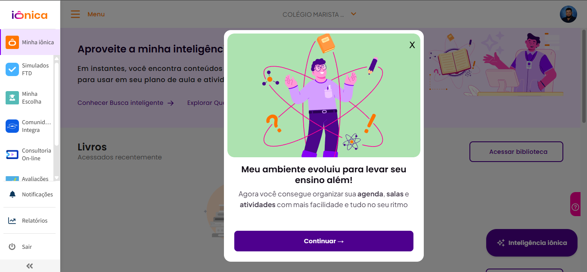
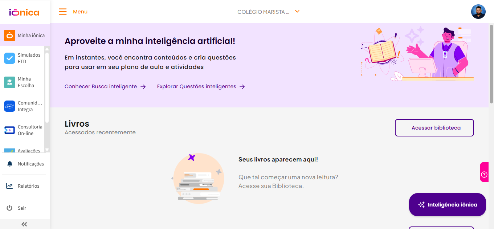

Fazer login #
ResumoProfessor entra só pelo botão Microsoft. Usuário e senha, "Criar conta" e o botão do Google não servem para você.
Abra a iônica e clique em Microsoft
Acesse home.souionica.com.br. Ignore os campos de usuário e senha e o botão "Criar conta" — desça até "ou, acesse com:".

Escolha sua conta institucional
A Microsoft mostra as contas já usadas neste navegador. Clique na sua, com final @maristabrasil.org. Se não aparecer, use "Use outra conta".

Se pedir autenticação, confirme pelo app ou pelo celular
Depende de como sua conta está configurada — nos dois casos é rápido:


Feche o aviso de novidades
Na primeira vez pode aparecer um pop-up apresentando as novidades. É só clicar em Continuar (ou no X) — nada é perdido.

Pronto — você está dentro 🎉
Esta é a Minha iônica, sua página inicial. Antes de qualquer coisa, confira no topo se a escola é a certa.

⚠️
Não conseguiu entrar pela Microsoft? Quer dizer que seu acesso ainda não foi liberado — não adianta tentar criar conta. Procure o responsável pelo seu segmento que a gente resolve a liberação.
🎥 Vídeo curto — a gravar